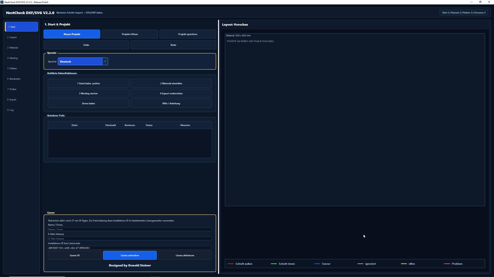

DXF/SVG-Teile pruefen, nestingen und exportieren.
NestCheck platziert SVG- und DXF-Teile auf Materialplatten, verwaltet Restmaterial und exportiert laserfertige Dateien fuer gaengige Maschinenprofile.

Was die Software kann
Von importierten Konturen bis zum exportierten Plattenlayout: NestCheck buendelt Pruefung, Nesting, Restmaterial und Export in einem klaren Ablauf.
Konturen pruefen
Importierte SVG- und DXF-Dateien werden klassifiziert. Aussenkonturen, Innenlinien, Gravuren und Hinweise werden sichtbar dargestellt.
Material besser nutzen
Teile werden auf Standardplatten oder Restmaterial platziert. Abstaende, Rand, Winkelraster und Mehrplatten-Layouts sind einstellbar.
Laserfertig exportieren
SVG- und DXF-Export mit Profilen fuer Trotec, LightBurn/RDWorks, Epilog/Universal und xTool/Generic.
Ein klarer Workflow
Die App fuehrt vom Import ueber Materialauswahl und Nesting bis zur geprueften Exportdatei.
SVG oder DXF importieren
Material oder Restplatte waehlen
Nesting starten
Layout pruefen und bearbeiten
SVG oder DXF exportieren
Video
Ein kurzer Blick auf den Laser-Workflow und die Moeglichkeiten der beiden Programme.
Direkt herunterladen
Lade den Windows-Installer direkt aus dem GitHub-Release herunter. Die Software enthaelt eine Testphase und kann anschliessend per Lizenz aktiviert werden.